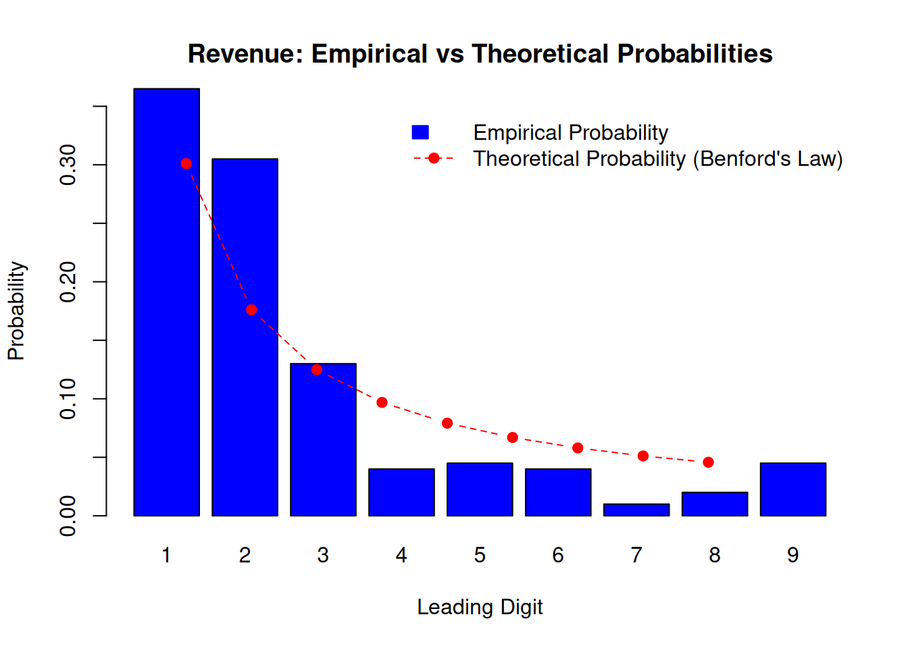
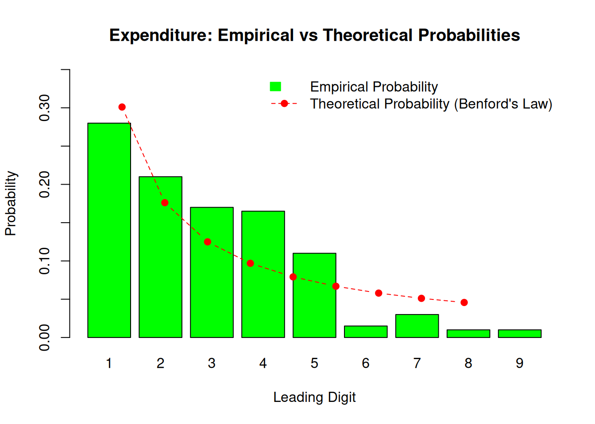

financial_data <- read.csv("../data/company_financials.csv")worked_solution_for_lecture_2
Project 2: Financial Data Forensics – Investigating Financial Reports Using Benford’s Law**
Overview
This project challenges you to apply Benford’s Law to detect potential anomalies in financial data. By analyzing the leading digits of revenue and expenditure data for a set of companies, you will explore whether these datasets follow the natural logarithmic distribution predicted by Benford’s Law. Through this project, you will reinforce your understanding of empirical probabilities and their applications, while also practicing critical data analysis skills in R.
Objectives
- Analyze the distribution of leading digits in revenue and expenditure data.
- Compare empirical distributions with the theoretical predictions of Benford’s Law.
- Identify and interpret deviations from Benford’s Law.
- Reflect on the implications of your findings in the context of financial forensics.
Steps
Step 1: Understand the Research Question Your main tasks are: 1. To determine if the leading digits of revenues and expenditures conform to Benford’s Law. 2. To interpret deviations, particularly in expenditure data, which may suggest anomalies such as fraud or manipulation.
Step 2: Obtain and Inspect the Dataset
- Download the Dataset:
- Mock Dataset: You will receive a CSV file named
company_financials.csv, containing simulated data for revenues and expenditures of 200 companies. This dataset includes some subtle anomalies in the expenditures.
- Mock Dataset: You will receive a CSV file named
- Inspect the Data:
- Load the dataset in R and examine its structure using functions like
head(),summary(), andstr(). - Ensure you understand the data columns:
CompanyID: A unique identifier for each company.Revenue: The revenue of the company (in dollars).Expenditure: The expenditure of the company (in dollars).
- Load the dataset in R and examine its structure using functions like
Step 3: Prepare the Data
- Filter Valid Data:
- Exclude invalid entries:
- Non-positive values (e.g., 0 or negative numbers).
- Missing values (
NA).
- Exclude invalid entries:
- Extract Leading Digits:
- Use string manipulation to extract the first digit from each valid value:
Step 4: Analyze the Data
- Compute Empirical Frequencies:
- Tabulate the frequencies of the leading digits for revenues and expenditures:
- Compare with Benford’s Law:
- Create data frames for comparison:
- Visualize the Results:
- Plot bar charts comparing empirical and theoretical distributions for revenues and expenditures.
Step 5: Interpret the Results
- Evaluate Conformity:
- Does the revenue data closely match Benford’s predictions?
- Do expenditures show significant deviations?
- Hypothesize Causes:
- What might explain deviations in expenditures? Consider:
- Rounded or artificial values.
- Anomalies such as fraud.
- What might explain deviations in expenditures? Consider:
- Probability Context:
- Relate empirical frequencies to probabilities and discuss the implications of large sample sizes.
Load and inspect the dataset
I read the datafile first. Path is specific to my local folder structure and will be different in your case.
Note also, since the csv is fairly “clean”, I need not much more in terms of arguments but the path alone, i.e. no line skipping, definitions of separators etc. This is unrealistic for most real life situations which have usually their twists and tweaks. On the other hand, dealing with those is best learned and practiced in real data cleaning exercises, where you actually do care for getting the data in the format you want.
I often use R’s str() function to get a bird eye’s view of what’s in a project, like this:
str(financial_data)'data.frame': 200 obs. of 3 variables:
$ CompanyID : chr "A001" "A002" "A003" "A004" ...
$ Revenue : num 29674 20273 32488 54930 19139 ...
$ Expenditure: num 5972 4963 1000 3025 3819 ...From this I see that the data are now a dataframe with one variable of type character for the company identifiers and the other two numerical for revenue and expenditure numbers.
It is also a good rountine step to let R display the first few rows in the dataset using the head()function.
head(financial_data) CompanyID Revenue Expenditure
1 A001 29674.06 5972.18
2 A002 20272.92 4962.98
3 A003 32487.58 1000.00
4 A004 54930.16 3025.12
5 A005 19139.47 3819.06
6 A006 19139.66 4260.30Finally also a good routine is to use R’s summary()function. summary will compute summary statistics for an R object. Its specific behavior will depend on which specifc object is passed to summary as an argument. It is a similar behavior as in R’s plot()function.
summary(financial_data) CompanyID Revenue Expenditure
Length:200 Min. : 4574 Min. : 426.3
Class :character 1st Qu.: 14428 1st Qu.: 1999.5
Mode :character Median : 21971 Median : 3145.3
Mean : 25199 Mean : 3783.8
3rd Qu.: 29748 3rd Qu.: 4756.9
Max. :112657 Max. :30080.7 Here we get a summary statistics of statistics from the empirical distribution of both variables.
Prepare the Data
We do some data cleaning first. We filter the positive entiries first. Then we remove any remaining NA-
financial_data_clean <- financial_data[financial_data$Revenue > 0 &
financial_data$Expenditure > 0, ]
financial_data_clean <- na.omit(financial_data_clean)Seems that there was no need for this anyway. Never mind.
Extract leading digits for Revenue and Expenditure
To do this I first convert to character, then extract the first digit
financial_data_clean$Revenue_Leading <- as.numeric(substr(as.character(financial_data_clean$Revenue), 1, 1))
financial_data_clean$Expenditure_Leading <- as.numeric(substr(as.character(financial_data_clean$Expenditure), 1, 1))Analyze the Data
# Define Benford's theoretical probabilities
benford_probs <- log10(1 + 1 / (1:9))# Tabulate empirical frequencies for Revenue
revenue_freq <- table(financial_data_clean$Revenue_Leading)
revenue_total <- sum(revenue_freq)
revenue_prob <- revenue_freq / revenue_total# Tabulate empirical frequencies for Expenditure
expenditure_freq <- table(financial_data_clean$Expenditure_Leading)
expenditure_total <- sum(expenditure_freq)
expenditure_prob <- expenditure_freq / expenditure_total# Combine empirical and theoretical probabilities for comparison
revenue_analysis <- data.frame(
Leading_Digit = 1:9,
Empirical_Probability = revenue_prob,
Theoretical_Probability = benford_probs
)expenditure_analysis <- data.frame(
Leading_Digit = 1:9,
Empirical_Probability = expenditure_prob,
Theoretical_Probability = benford_probs
)Step 5: Visualize the Results
# Ensure the Empirical_Probability vector is complete and matches all leading digits
revenue_empirical <- rep(0, 9)
names(revenue_empirical) <- 1:9
revenue_empirical[names(revenue_freq)] <- revenue_prob
# Plot for Revenue
barplot(
height = revenue_empirical,
names.arg = 1:9,
col = "blue",
ylim = c(0, 0.35),
main = "Revenue: Empirical vs Theoretical Probabilities",
xlab = "Leading Digit",
ylab = "Probability"
)
# Add the theoretical probabilities as a line
lines(1:9, benford_probs, type = "b", col = "red", pch = 19, lty = 2)
# Add a legend
legend(
"topright",
legend = c("Empirical Probability", "Theoretical Probability (Benford's Law)"),
fill = c("blue", NA),
border = c("blue", NA),
lty = c(NA, 2),
pch = c(NA, 19),
col = c("blue", "red"),
bty = "n"
)
# Plot for Expenditure
# Ensure the Empirical_Probability vector is complete and matches all leading digits
expenditure_empirical <- rep(0, 9)
names(expenditure_empirical) <- 1:9
expenditure_empirical[names(expenditure_freq)] <- expenditure_prob
# Plot for Expenditure
barplot(
height = expenditure_empirical,
names.arg = 1:9,
col = "green",
ylim = c(0, 0.35),
main = "Expenditure: Empirical vs Theoretical Probabilities",
xlab = "Leading Digit",
ylab = "Probability"
)
# Add the theoretical probabilities as a line
lines(1:9, benford_probs, type = "b", col = "red", pch = 19, lty = 2)
# Add a legend
legend(
"topright",
legend = c("Empirical Probability", "Theoretical Probability (Benford's Law)"),
fill = c("green", NA),
border = c("green", NA),
lty = c(NA, 2),
pch = c(NA, 19),
col = c("green", "red"),
bty = "n"
)
Here’s a more detailed interpretation and discussion section for Step 6:
Interpret the Results
After successfully implementing the analysis, let us interpret the findings and discuss the implications in detail. This section will help you connect the numerical results to practical insights, especially in the context of financial data forensics.
Revenue Analysis
- Comparison with Theoretical Probabilities:
- The empirical probabilities for the leading digits in the revenue data closely align with the theoretical probabilities predicted by Benford’s Law.
- Minor deviations may be observed, but these are expected due to natural variability in real-world data, especially with sample sizes of this magnitude.
- Conformity and Implications:
- The general conformity of revenue data to Benford’s Law suggests the data is naturally distributed and does not exhibit unusual patterns.
- This conformity may indicate that revenue figures are free from manipulation or rounding artifacts. However, it is essential to interpret this cautiously, as a match with Benford’s Law does not guarantee the absence of fraud.
Expenditure Analysis
- Comparison with Theoretical Probabilities:
- In contrast to the revenue data, the empirical probabilities for the leading digits in the expenditure data show noticeable deviations from Benford’s Law.
- Specific digits (e.g.,
1,2, or5) might occur more or less frequently than Benford’s prediction. These deviations could signal potential anomalies.
- Possible Causes for Deviations:
- Rounding or Aggregation:
- Expenditure data often involve rounding (e.g., to the nearest hundred or thousand), leading to a distortion in the distribution of leading digits.
- Threshold Effects:
- Companies may report expenditures near significant thresholds for tax or reporting purposes (e.g., $10,000 or $50,000).
- Fraud or Manipulation:
- Significant deviations from Benford’s Law could indicate deliberate manipulation of figures. For example, an unusually high frequency of certain digits may suggest attempts to fabricate or conceal financial data.
- Structural Characteristics:
- Expenditure data may not follow Benford’s Law naturally if the expenditures are constrained within certain ranges or categories.
- Rounding or Aggregation:
Detecting and Addressing Issues
- Visualizing Deviations:
- Use the bar plots to identify digits with the largest discrepancies between empirical and theoretical probabilities. These digits warrant closer examination.
- Statistical Tests:
- Consider applying statistical goodness-of-fit tests, such as the Chi-Square Test or the Kolmogorov-Smirnov Test, to quantify the level of deviation.
- A significant result in these tests would provide statistical evidence for non-conformity with Benford’s Law.
- Drill-Down Analysis:
- Focus on companies whose expenditure data contribute most to the deviations. This can be done by segmenting the dataset and recalculating the leading digit frequencies for specific subsets.
- Cross-Referencing with Other Indicators:
- Combine this analysis with other forensic techniques, such as trend analysis, ratio analysis, or checking for repeated patterns, to build a comprehensive understanding of the anomalies.
The revenue data conforms closely to Benford’s Law, indicating no immediate red flags. However, the expenditure data exhibits deviations that merit further investigation. While some deviations may result from benign causes, such as rounding or structural characteristics of the data, others could indicate potential anomalies, including fraud or deliberate manipulation.